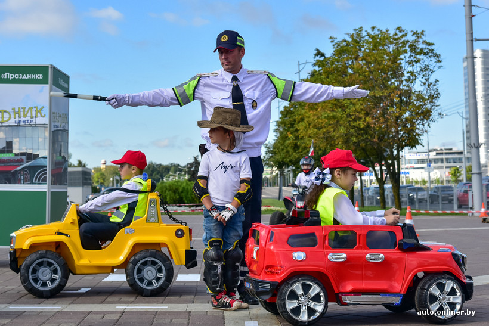

дети — несовершеннолетние участники дорожного движения, возраст которых известен либо очевиден по внешним признакам другим участникам дорожного движения;

Мероприятие "Добрая дорога детства".
Фото Александра Никонова с сайта onliner.by.
В Беларуси совершеннолетие наступает с 18 лет.
Фактически по ПДД к детям относятся 3 категории несовершеннолетних:
Дети выделены в отдельную категорию участников дорожного движения не просто так.
Хотя дети являются участниками дорожного движения, а все участники обязаны знать и соблюдать ПДД, на практике,
в силу своего возраста и характера, непоседливости и др. дети могут не соблюдать ПДД и попадать
в дорожно-транспортные происшествия.
В интервью транспортных экспертов сайту onliner.by развеяно несколько стериотипов о безопасности детей:
| Стереотип | Реальность |
| переходя дорогу по пешеходному переходу, дети находятся в безопасности | дети в половине случаев попадают в ДТП на пешеходном переходе (статистика по Минску) |
| Маленькие дети дети чаще попадают в авариии. | В городе за малолетними хорошо следят, в группе риска — подростки. |
| Детей сбивают "летуны" на BMW и мотоциклах. | Чаще всего детей в Минске сбивают иногородние водители за рулем микроавтобуса, фургона или грузовика при выполнении какого-либо маневра. |